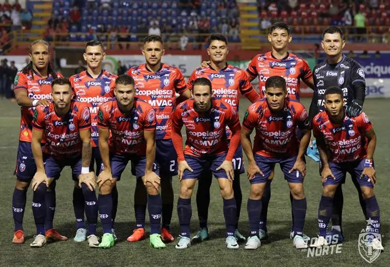

¿Como nacio el ADSC?
La Asociación Deportiva San Carlos es un club de fútbol profesional costarricense, fundado el 9 de mayo de 1965, con sede en el cantón de San Carlos, en la Zona Norte del país. Conocidos popularmente como Los Toros del Norte debido a la fuerte tradición ganadera de su región, compiten en la Primera División de Costa Rica (Liga FPD).
Ascenso Histórico a la Primera División (2025-2026)
Un dato histórico espectacular del Inter San Carlos es que logró ascender a la Primera División de Costa Rica sin jugar un solo partido de Gran Final, un logro extremadamente raro en la Liga de Ascenso costarricense.Esto ocurrió en la temporada 2025-2026 bajo la dirección de Douglas Sequeira, gracias a un rendimiento perfecto en el año:
